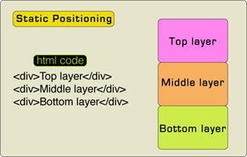
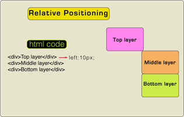
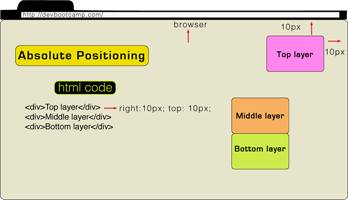

Week Two Entry Sunday, Sunday May 04, 2014
Positioning in CSS is a powerful tool. The positioning property works within the box model. Using the positioning property you can place elements in a html document. There are four positioning properties: static, relative, absolute and fixed. This blog covers the different ways each one of the properties can be used.
Static: By default all html elements are positioned static, which means it will follow the normal flow of elements placed on a page. When an element is positioned static, it is not affected by the position of other elements and it will not be affected by the right, left, top, bottom values assigned to it. If you add three boxes, one after the other in your html document and give it with a fixed position in css, they will stack one on top of the other in the order they were placed in the html document. 
Relative: Relative position is similar to static to a certain extent, relative also does not influence the position of other elements in the page. The difference ends there. If an element is given a relative position, the element will position itself relative to the order in which it was placed in the html document. You can assign values of right, left, top and bottom to relative position. When a value is assigned, it will move to the assigned offset value from where it was positioned in the document.
Absolute: Like relative positioning, absolute positioning will take offset values of right, left, top and bottom. When you apply absolute positioning to an element and then assign a value, the element will position relative to the viewport of the browser. When you resize the browser the element will not move and will still remain at the same position relative to the browser. However, if an element with absolute positioning is child of a parent, it will position relative to the parent. 
Fixed: This positioning is similar to absolute positioning, when you apply fixed positioning, the element will position relative to the browser. Fixed positioning takes right, left, top and bottom values. However, an element that is fixed will remain in the same position whether you scroll up and down or top to bottom, even if it is a child of a parent.